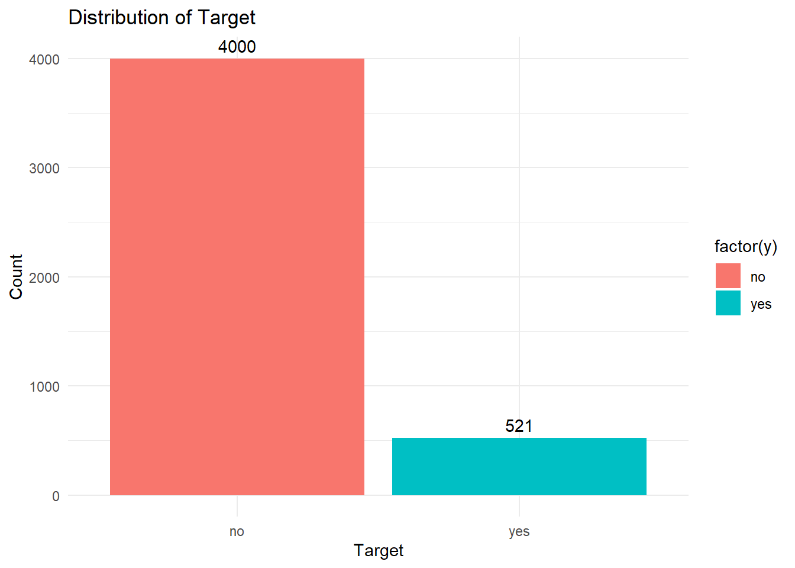

Comparing AI methods to predict if customer will enroll into term deposit
AI
analysis
R
Author
Aditya Ranade
Published
June 17, 2025
I found this dataset on UCI machine learning repository which gives bank marketing data for a Portuguese banking institution. The goal is to predict if the client will subscribe to a term deposit. The data has various predictor variables. We will look at the data first and then look to build a prediction model.
library(reshape2)library(ggplot2)library(tidyverse)library(dplyr)library(ggh4x)library(GGally)library(pROC)library(naivebayes)library(caret)library(e1071)library(nnet)library(xgboost)# Load data in Rpath <-"https://raw.githubusercontent.com/adityaranade/portfolio/refs/heads/main/bank_marketing/bank.csv"data0 <-read.csv(path, sep =";", header =TRUE)# Check the first 6 rows of the datasethead(data0)
age job marital education default balance housing loan contact day
1 30 unemployed married primary no 1787 no no cellular 19
2 33 services married secondary no 4789 yes yes cellular 11
3 35 management single tertiary no 1350 yes no cellular 16
4 30 management married tertiary no 1476 yes yes unknown 3
5 59 blue-collar married secondary no 0 yes no unknown 5
6 35 management single tertiary no 747 no no cellular 23
month duration campaign pdays previous poutcome y
1 oct 79 1 -1 0 unknown no
2 may 220 1 339 4 failure no
3 apr 185 1 330 1 failure no
4 jun 199 4 -1 0 unknown no
5 may 226 1 -1 0 unknown no
6 feb 141 2 176 3 failure no
# Check the rows which do not have any entriessum(is.na(data0)) # No NA values
[1] 0
# Data processingdata <- data0 |>select(age,job,marital,education,default, balance,housing,loan,duration, campaign,pdays,previous,poutcome,y)# # Check data type# data %>% str# Convert the variables to categoricaldata$job <-as.factor(data$job)data$marital <-as.factor(data$marital)data$education <-as.factor(data$education)data$default <-as.factor(data$default)data$housing <-as.factor(data$housing)data$loan <-as.factor(data$loan)data$poutcome <-as.factor(data$poutcome)data$y <-as.factor(data$y)# Check the distribution of the outcome yggplot(data, aes(x =factor(y), fill =factor(y))) +geom_bar() +#geom_bar(fill = "purple") +geom_text(stat ="count", aes(label = ..count..), vjust =-0.5)+labs(x ="Target", y ="Count", title ="Distribution of Target") +theme_minimal()

The number of yes are considerably low compared to no. This indicates we have imbalanced class. First we will look at a simple logistic regression.
# To ensure reproducibilityset.seed(55)# Split data into training and testing setind <-sample(1:nrow(data),floor(0.7*nrow(data)),replace =FALSE)# Training datasetdata_train <- data[ind,]# Testing datasetdata_test <- data[-ind,]
# weights: 151
initial value 1932.835777
iter 10 value 1084.378919
iter 20 value 1008.871476
iter 30 value 1000.762095
iter 40 value 980.193591
iter 50 value 940.441583
iter 60 value 926.854358
iter 70 value 921.815841
iter 80 value 917.811037
iter 90 value 884.518071
iter 100 value 825.223570
iter 110 value 802.825670
iter 120 value 794.840877
iter 130 value 784.739292
iter 140 value 766.855650
iter 150 value 759.677806
iter 160 value 757.825474
iter 170 value 756.109305
iter 180 value 752.439765
iter 190 value 748.184352
iter 200 value 746.727211
final value 746.727211
stopped after 200 iterations
# Predictionsy_pred_nnet <-predict(model_nnet, data_test, type ="class")# Confusion MatrixconfusionMatrix(data_test$y, as.factor(y_pred_nnet))
Confusion Matrix and Statistics
Reference
Prediction no yes
no 1158 35
yes 106 58
Accuracy : 0.8961
95% CI : (0.8786, 0.9118)
No Information Rate : 0.9315
P-Value [Acc > NIR] : 1
Kappa : 0.3988
Mcnemar's Test P-Value : 3.745e-09
Sensitivity : 0.9161
Specificity : 0.6237
Pos Pred Value : 0.9707
Neg Pred Value : 0.3537
Prevalence : 0.9315
Detection Rate : 0.8534
Detection Prevalence : 0.8791
Balanced Accuracy : 0.7699
'Positive' Class : no
# Confusion Matrix data framecm_list$neural_network <-confusionMatrix(data_test$y, as.factor(y_pred_nnet))
The accuracy is close to 89.61% which is not bad. Next we will try support vector classification method.
Confusion Matrix and Statistics
Reference
Prediction no yes
no 1017 176
yes 147 17
Accuracy : 0.762
95% CI : (0.7384, 0.7844)
No Information Rate : 0.8578
P-Value [Acc > NIR] : 1.0000
Kappa : -0.0408
Mcnemar's Test P-Value : 0.1192
Sensitivity : 0.87371
Specificity : 0.08808
Pos Pred Value : 0.85247
Neg Pred Value : 0.10366
Prevalence : 0.85777
Detection Rate : 0.74945
Detection Prevalence : 0.87915
Balanced Accuracy : 0.48090
'Positive' Class : no
# Confusion Matrix data framecm_list$smote_support_vector_classifier <-confusionMatrix(data_test$y, as.factor(y_pred_svc))
The accuracy is close to 89.61% which is not bad. Next we will try some method to deal with imbalanced dataset using the SMOTE (Synthetic Minority Oversampling Technique) method which tries to balance the classes by oversampling from the minority classes. We will try to run all the models based on the over sampled data and compare them.
# SMOTE methodlibrary(ROSE)data_train2 <-ovun.sample(y ~ ., data = data_train,method ="over", N = (nrow(data_train)*3))$data
# weights: 151
initial value 6672.439994
iter 10 value 5444.151418
iter 20 value 4928.673252
iter 30 value 4668.104777
iter 40 value 4574.222061
iter 50 value 4493.420471
iter 60 value 4331.950671
iter 70 value 4099.714709
iter 80 value 4002.793010
iter 90 value 3980.135694
iter 100 value 3847.275435
iter 110 value 3731.594349
iter 120 value 3678.434483
iter 130 value 3672.812783
iter 140 value 3671.252056
iter 150 value 3665.833513
iter 160 value 3665.133792
iter 170 value 3663.637799
iter 180 value 3659.793664
iter 190 value 3659.407716
iter 200 value 3658.453928
final value 3658.453928
stopped after 200 iterations
# Predictionsy_pred_nnet2 <-predict(model_nnet2, data_test, type ="class")# Confusion MatrixconfusionMatrix(data_test$y, as.factor(y_pred_nnet2))
Confusion Matrix and Statistics
Reference
Prediction no yes
no 806 387
yes 25 139
Accuracy : 0.6964
95% CI : (0.6711, 0.7208)
No Information Rate : 0.6124
P-Value [Acc > NIR] : 6.596e-11
Kappa : 0.268
Mcnemar's Test P-Value : < 2.2e-16
Sensitivity : 0.9699
Specificity : 0.2643
Pos Pred Value : 0.6756
Neg Pred Value : 0.8476
Prevalence : 0.6124
Detection Rate : 0.5940
Detection Prevalence : 0.8791
Balanced Accuracy : 0.6171
'Positive' Class : no
# Confusion Matrix data framecm_list$smote_neural_network <-confusionMatrix(data_test$y, as.factor(y_pred_nnet2))
Based on accuracy, neural network model on original data is the best and based on the sensitivity (true positive rate), logistic regression on over sampled data is the best.